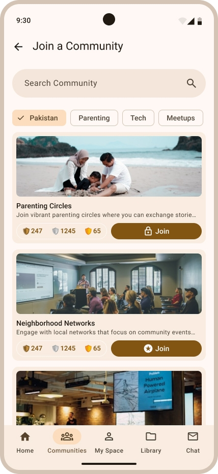
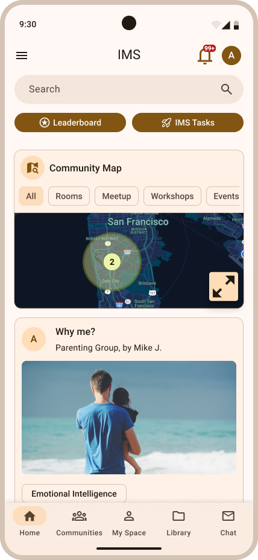
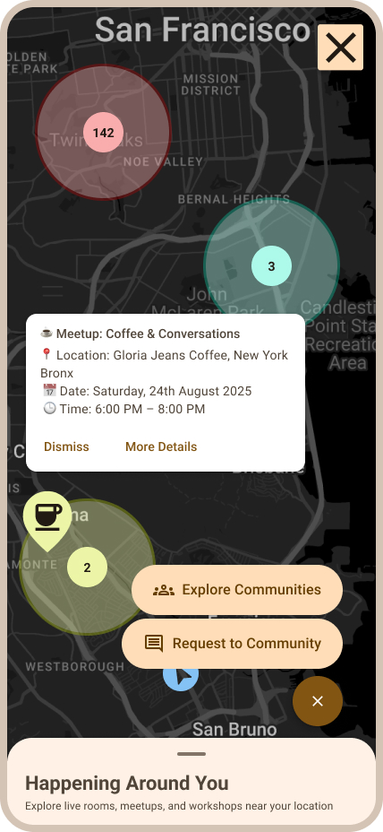
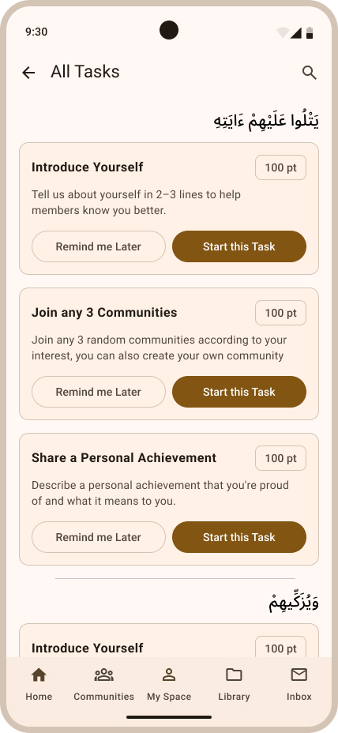
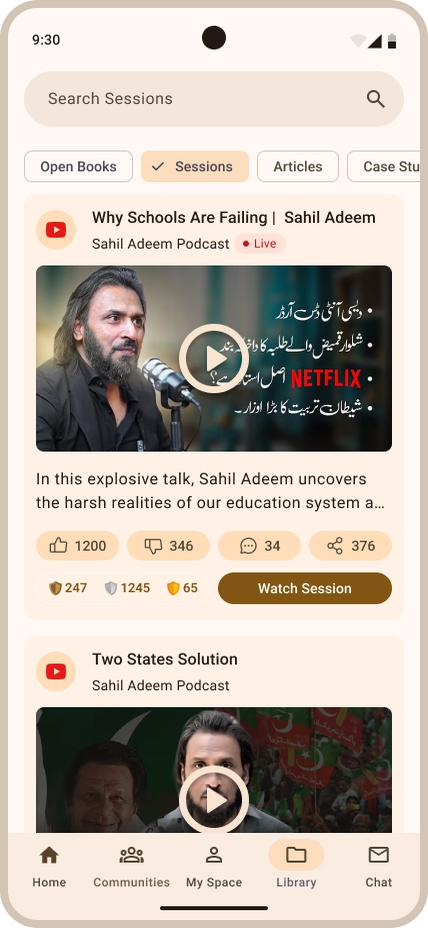

IMS App — Islamic Messaging System
A purpose-built platform for the global Muslim intellectual community
Designed the complete product ecosystem for the Islamic Messaging System — a platform where learning, mentorship, community building, and real-world engagement converge. Not social media. A deliberate architecture for meaningful participation, inspired by the educational framework of Surah Al-Jumu'ah.
On this page: Overview • App Screens • Problem • My Role • Philosophy • Process • IA • Community • Map • Missions • Admin Portal • Design System • Features • Challenges • Roadmap
← Swipe to explore the ecosystem →
Mobile App Experience

Community
ims-screen-2.png
Community

Home Dashboard
ims-screen-1.png
Home Dashboard

Interactive Map
ims-screen-3.png
Interactive Map

Tasks & Missions
ims-screen-4.png
Missions

My Space
ims-screen-5.png
My Space
← Swipe to explore screens →
A platform built around purpose, not engagement
IMS is a community-driven digital platform designed to connect Muslims around the world through structured learning, intellectual discussion, personal development, and real-world engagement. The platform deliberately avoids the mechanics of social media — no infinite scroll, no vanity metrics, no attention-hacking. Every feature is designed to push users toward contribution, not consumption.
What It Is
A scalable product ecosystem combining Reddit's discussions, LinkedIn's professional network, Meetup's event discovery, Discord's community structure, and structured learning — filtered through Islamic educational principles. Not one thing, but a coherent whole.
What It Is Not
Not another social media app. IMS deliberately rejects addictive design patterns, dark patterns, and passive consumption mechanics. No algorithmic feeds designed to maximize time-on-screen. Every decision reinforces meaningful participation.
The Opportunity
The global Muslim community lacks a dedicated digital space for intellectual growth and real-world connection. Existing platforms are either too general, or built on engagement mechanics that don't serve personal development. IMS fills that gap.
The fragmentation of Muslim intellectual life online
Muslims seeking intellectual growth, community connection, and mentorship today must navigate a fragmented landscape — scattered across platforms not designed for them, with no mechanism to bridge online discussions to offline impact.
No Dedicated Intellectual Space
Platforms like Reddit and Twitter host Muslim discussions, but the architecture rewards sensationalism over depth. There's no space optimized for intellectual growth within an Islamic framework.
Online-Offline Disconnect
No platform bridges digital community participation to real-world meetups, workshops, and local events. Meetup.com is secular and general. Local Muslim events have no shared discovery layer.
Passive Consumption Culture
Social media conditions users to consume rather than contribute. The Muslim community needs tools that reward active participation, scholarship, mentorship, and peer-to-peer learning.
No Growth Accountability
Personal development in Islamic tradition is structured and measurable. Existing platforms provide no framework to track growth across spiritual, intellectual, and community dimensions.
The existing workaround: WhatsApp Communities
Many Muslim communities are already coordinating digitally — through WhatsApp Communities, Telegram groups, and private Discord servers. This validates real demand for a connected community space. But these are borrowed tools, not built-for-purpose infrastructure. There is no scoring system, no contribution tracking, no content moderation at scale, and no mechanism to keep members meaningfully engaged over time. Activity spikes on announcements and dies between them. The goal of IMS is to replace the workaround with a purpose-built ecosystem — one where every action, a discussion started, a task completed, a workshop attended, accumulates into a measurable growth profile and creates a daily reason to come back.
Lead Designer — directing a team of five
I led a design team of five, with each designer owning a distinct product module. My role spanned overall product vision, design direction, cross-module consistency, and the architecture decisions that unified the full platform. Individual modules were executed collaboratively, with designers working in parallel under shared guidelines I established — then reviewed, aligned, and integrated into the cohesive product.
Team structure: Five remote designers total — Community & Discussions, Map & Events, Missions & Gamification, Library & Knowledge, and Admin Portal — each owning their module end to end. I led across all modules: setting the design language, defining the IA, and ensuring everything connected as one coherent system.
Rooted in Surah Al-Jumu'ah
The product's architecture is not arbitrary. It is structured around the four developmental dimensions described in Surah Al-Jumu'ah — the Quranic model of community education. These quadrants are not cosmetic; they define how the platform measures growth, structures content, and rewards participation.
Recitation & Reflection
Quranic understanding, personal reflection, and deep engagement with revealed knowledge. The platform's content and reflection tools are designed to foster this mode of learning.
Purification & Character
Morality, ethics, and personal growth. Community behavior standards, mentorship features, and character-building activities all tie back to this quadrant.
Knowledge & Education
Structured learning, research, courses, and intellectual development. The Library module, courses, and publications all serve this quadrant directly.
Wisdom & Application
Applying knowledge in the real world — leadership, decision-making, events, workshops, and community impact. The Map and Missions features primarily serve this quadrant.
From product definition to MVP design
Given the scope of this platform — six major product areas, an admin portal, a gamification system, and a design system — the process was structured to establish strong foundations before moving into screen-level design.
A key process decision was to invest heavily in product architecture before touching screens. Platforms of this complexity — with multiple overlapping content types, personas, and community behaviors — fail when designed screen-first. The IA and ecosystem work took longer, but every screen designed thereafter had a clear structural foundation and clear purpose.
Six modules, one coherent system
The platform is organized into six primary areas, each with a distinct purpose. Navigation is designed so users can access any module in two taps from anywhere in the app. The bottom navigation bar is persistent; deeper navigation within each module follows Material Design 3 navigation patterns.
The heart of the platform
The Community module is the most complex part of the product. It needed to support everything from casual discussion threads to structured community management, from peer-to-peer content sharing to admin-approved task systems. The design challenge was making this richness feel accessible, not overwhelming.
Discovery & Joining
Users browse interest-based communities via a searchable directory. Communities are categorized by topic, location, and quadrant alignment. Verified communities display trust indicators. Any user can join public communities; restricted communities require approval.
Discussion Architecture
Inspired by Reddit's upvote model but without the toxicity incentives. Threads, posts, and comments are organized by recency and community-voted quality. The design deliberately avoids hot-sorting that rewards outrage. Long-form posts are first-class content.
Community Creation
Verified users can create communities with defined missions, descriptions, and moderation rules. Community creation requires identity verification to prevent abuse. Admins can set community type (public, restricted, private) and manage membership levels.
Resources & Events
Each community has a Resources tab for shared documents, links, and publications — all moderated before appearing. The Events tab surfaces community-organized meetups and workshops. Events link to the Map module for location-aware discovery.
The feature that changes everything
The Interactive Map is IMS's most significant differentiator. It solves the online-offline problem that every community platform struggles with. Rather than keeping the community purely digital, the Map makes the physical Muslim world visible and navigable — allowing users to discover people, events, workshops, and communities in their area.
Design inspiration: Meetup's event discovery, Couchsurfing's community-around-me model, and the navigational clarity of Google Maps — filtered through a product that is specifically for structured community participation rather than casual travel or social events.
Map Layers
The map renders multiple overlapping data layers: communities (represented as zones), individual members who've opted in to visibility, events and workshops, and permanent venue markers. Users toggle layers based on what they're looking for.
Discovery Filters
Filtering by distance, interest category, event type, community size, and date range. The filter system collapses into a persistent bottom bar on mobile. Filter state persists across sessions so users don't re-configure every visit.
Bottom Sheet Pattern
A persistent bottom sheet surfaces the nearest 3–5 opportunities contextually, updating as the user pans the map. Tapping any item expands it to full detail. This avoids forcing users to tap individual pins for basic context.
Verification Gate
Hosting events, placing yourself on the map, and creating community markers all require identity verification. This trust architecture is critical for safety — especially for in-person meetups with strangers.
Growth that means something
The gamification strategy for IMS was the most philosophically difficult design challenge. The goal was to create meaningful incentives without importing the addictive, shallow mechanics of social media. Points and badges need to feel earned through genuine contribution, not through gaming the system.
Meaningful Badges
Badges are earned through verifiable contributions, not passive activity. "Community Helper," "Active Contributor," "Mentor," and "Top Researcher" are awarded by admins following review — not automatically. This makes each badge a real credential, not a hollow achievement.
Hall of Fame
Top contributors by community, country, and region appear in the Hall of Fame. Unlike social media follower counts, this recognition is based on contribution quality, not content virality. It creates aspirational role models within the community.
Scholarships & Access
High-level contributors unlock exclusive opportunities: scholarship applications, private mentorship sessions, early access to resources, and invitations to exclusive workshops. This creates a clear, meaningful progression path beyond abstract point totals.
The control layer that keeps the ecosystem healthy
A platform like IMS — with moderated content, verified identities, admin-reviewed tasks, and managed events — requires a robust administrative backend. The Admin Portal is a separate web-based application designed for platform operators, community managers, and trust & safety teams. It was designed in parallel with the mobile app to ensure every admin action maps cleanly to a user-facing outcome.
Dashboard
Platform health overview: active users, content volume, task completion rates, verification queue depth, flagged content. Designed for at-a-glance situation awareness.
Task Management
Create platform-wide and community-specific tasks. Review user submissions, approve or reject with feedback, award points and badges. Full task lifecycle management.
Sessions
Approve, schedule, and manage recorded learning sessions. Link sessions to Library entries. Manage session recordings and associated metadata.
Events
Approve meetup and workshop creation requests. Manage event listings, validate venue information, and monitor attendance for safety tracking.
Communities
Review community creation requests, manage community status, handle moderation escalations, and audit community health metrics over time.
KYC — Identity
Review CNIC, passport, and selfie verification submissions. Approve or reject with reason codes. Manage verification tiers and permission grants per user.
UMS — User Management
Full user record management: profile history, activity logs, verification status, warnings, bans, and permission overrides. The source of truth for every user account.
Material Design 3, adapted with purpose
The design system is built on Material Design 3 as its foundation — chosen for its Android-first optimization, dynamic color system, and accessible component library. It was then adapted to serve IMS's specific visual direction: modern, clean, purposeful, and trustworthy without feeling clinical or corporate.
Dynamic Color System
MD3's dynamic color system forms the base. A primary seed color generates the full palette — tonal surfaces, on-colors, and semantic states. The system supports both light and dark schemes, with dark mode as the default for the mobile application to reduce eye strain during extended reading sessions.
Hierarchical Type Scale
Five type roles (Display, Headline, Title, Body, Label) map to semantic usage contexts — not arbitrary sizes. Arabic script support is built into the type system from the ground up, with proper RTL handling for Quranic verses, community names, and user content.
Purposeful Components
Cards, sheets, navigation bars, FABs, and dialogs follow MD3 specifications but are extended with IMS-specific patterns: quadrant progress indicators, community badges, verification seals, map markers, and mission cards that don't exist in the base MD3 library.
Motion & Feedback
MD3's emphasis on meaningful motion — shared element transitions, container transforms, and fade-through — is used deliberately. Animations reinforce spatial relationships and content hierarchy rather than serving as decoration. Reduced-motion preferences are respected throughout.
Material Symbols
Material Symbols (variable font) as the primary icon set, with custom icons for IMS-specific concepts: quadrant indicators, verification status, community tier markers, and mission type icons that require unique visual treatment.
Design Tokens
All design decisions are expressed as tokens: color, spacing, radius, elevation, and motion. Tokens are structured for direct handoff to Android developers using Material Theme Builder outputs — no translation layer needed between design and engineering.
Designed for depth, not engagement metrics
Identity Verification (KYC)
CNIC, passport, and selfie-based verification reviewed by admins. Verified users unlock hosting, community creation, and map visibility — creating a trusted, accountable community.
Public Analytics Transparency
Unlike traditional platforms, engagement data is transparent. Users see who read their article, which experts engaged, and detailed interaction stats — fostering accountability without anonymity.
Smart Notification Summaries
Contextual summaries rather than notification spam: "3 experts viewed your profile," "Your article received 12 upvotes," "New workshop 4km away." A login summary bottom sheet surfaces the most relevant updates at session start.
Quadrant Progress Tracking
Every action on the platform maps to one or more of the four Surah Al-Jumu'ah quadrants. Users see their development balance across Recitation, Purification, Knowledge, and Wisdom dimensions.
Mentorship Framework
Senior members can offer mentorship through the platform. The mentorship system is tied to verification and point levels — ensuring mentors have demonstrated real contribution before advising others.
Moderated Knowledge Library
All content in the Library is reviewed before publication. No unmoderated user uploads. This preserves content quality and builds the Library as a genuine scholarly resource rather than a content dump.
The hard calls that shaped the product
Scope vs. Coherence
Six major modules, an admin portal, gamification, a map, and a library — the risk was building six mediocre products instead of one great one. The pressure to include everything was real.
Each module was defined with a clear primary purpose and a single success metric. Features that didn't serve the primary purpose were deferred to later phases. Community and Map were prioritized as the two features that deliver unique value no existing platform offers.
Gamification Without Addiction
Every gamification mechanic that works in consumer apps works by exploiting psychological vulnerabilities. The challenge was building a reward system that motivates without manipulating.
The key decision was making all significant rewards human-reviewed rather than algorithmic. Badges require admin approval. Scholarships require applications. This introduces intentional friction that filters out gaming behavior while preserving genuine achievement recognition.
Trust & Safety at Scale
A platform enabling in-person meetups between strangers carries real safety responsibility. Standard community platform safety design wasn't sufficient given the sensitivity.
Identity verification was made a hard gate — not optional — for any feature involving physical-world interaction. The KYC module was designed as a first-class product, not an afterthought. Admins see the verification queue as a primary dashboard item.
Arabic + RTL Content
The platform's core philosophy is expressed through Quranic Arabic. Typography, layout, and content components needed to handle RTL text elegantly — not as an afterthought addition.
RTL support was built into the design system from day one, not retrofitted. Arabic type was tested across all component variants. The quadrant cards use Arabic text as a design element — it's prominent and beautiful, not hidden or scaled down.
Community Cold Start
A community platform with no users is unusable. The design needed to account for the state where communities are empty, content is sparse, and the map shows nothing nearby.
Empty states are designed as calls to action rather than blank voids. The Home dashboard surfaces global community highlights when local content is thin. The Map shows a regional view with nearby opportunities even when the immediate vicinity is sparse.
Defining "Intellectual" Without Exclusion
The platform name and philosophy could inadvertently signal that it's only for academics or the highly educated — excluding the majority of the community it aims to serve.
The four quadrants deliberately include Recitation (accessible to all) and Character Development (universal) alongside Knowledge and Wisdom. Onboarding language emphasizes that everyone is at a different stage of their journey, and the platform meets people where they are.
What guided every decision
Contribution Over Consumption
Every feature is evaluated against this question: does it make it easier to give or to take? Features that primarily serve consumption are either redesigned or deprioritized. The default state of the platform pushes users toward creating, sharing, and engaging rather than scrolling.
Trust is Earned, Not Assumed
Permissions are progressive. New users get basic access. Verified users get community creation and map presence. High-level contributors get exclusive opportunities. This creates a clear social contract — the platform gives more as users demonstrate genuine contribution.
Clarity Over Cleverness
The platform serves a global, diverse audience with varied digital literacy. Clever interaction patterns that require learning are avoided in favor of immediately understandable affordances. If a feature needs a tooltip to explain it, it needs to be redesigned.
The Offline World Matters
A community platform that keeps its community entirely online has failed. Every digital interaction should have a pathway to real-world connection — events, meetups, mentorship sessions, and workshops. The Map module is the physical expression of this principle.
Where the platform goes from here
The current phase covers Android MVP. The product is designed as a scalable ecosystem — the architecture decisions made now are deliberately forward-compatible with the full vision.
Android MVP
- Home Dashboard
- Community (core)
- Interactive Map
- Tasks & Missions
- Admin Portal v1
- Identity Verification
Knowledge Layer
- Full Library module
- Course creation tools
- Session recordings
- Research publications
- My Space — full profile
- Mentorship matching
Web Platform
- Web application (responsive)
- Extended creator tools
- Advanced analytics
- Scholarship portal
- Hall of Fame public page
- Community API
iOS & Ecosystem
- iOS application
- Institutional accounts
- White-label communities
- Advanced recommendation engine
- Translation & localization
- Open content API
This project is still being built
IMS is in active product definition, UX architecture, and design system creation. This case study documents strategic and architectural decisions — final screens and prototypes are being developed. Interested in following the progress or discussing the product?